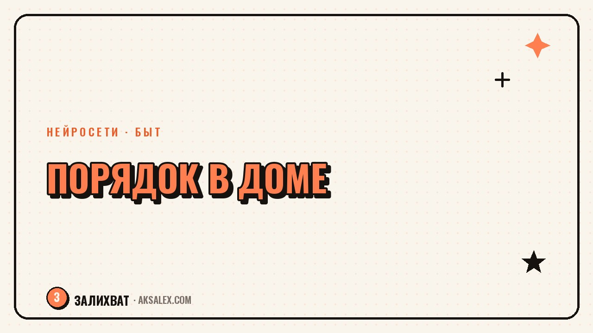

Нейросети для порядка в доме: система без хаоса

Бардак в доме редко случается из-за лени. Чаще дело в том, что в голове одновременно крутится десять незакрытых задач: разобрать шкаф, докупить контейнеры, решить, куда девать коробки от техники. Нейросеть не вытирает пыль за тебя, но снимает самую выматывающую часть - бесконечные мелкие решения. Она раскладывает хаос по полочкам на экране, а дальше ты выполняешь готовый план, а не придумываешь его на ходу каждый вечер.
Почему порядок в доме держится на системе, а не на разовой уборке
Генеральная уборка раз в месяц даёт красивую фотографию на час, а потом всё возвращается на свои неправильные места. У вещей нет постоянного адреса, а у домашних дел нет расписания - всё держится на том, что ты вспомнишь и успеешь.
Нейросеть хорошо справляется с тем, что делать скучно и трудно одновременно: разбить большую цель на мелкие шаги. Опиши квартиру и привычки - сколько комнат, людей, есть ли дети или животные - и получишь конкретный план на неделю с пунктами по 15-20 минут.
Как разбить уборку по зонам и дням без перегруза
Рабочая схема - делить не комнаты, а зоны внимания: поверхности, пол, текстиль, техника, шкафы. Нейросеть расписывает, какая зона убирается в какой день, чтобы ни один день не превращался в генеральную уборку целиком.
- Понедельник - поверхности и кухня
- Вторник - пол во всех комнатах
- Среда - ванная и туалет
- Четверг - текстиль и постельное бельё
- Пятница - техника и провода
- Выходные - одна зона из плана разбора хлама
План легко адаптировать под свой ритм: попроси нейросеть пересобрать расписание под рабочий график или период с болеющим ребёнком.
Как разложить вещи по местам и не захламляться заново
Главная причина повторного бардака - у вещей нет закреплённого места, поэтому они оседают там, где удобнее бросить. Нейросеть помогает продумать систему категорий: что храним в прихожей, что в спальне, что уезжает в кладовку.
Порядок держится не на том, что ты всё убрал один раз, а на том, что у каждой вещи есть простое правило - куда она возвращается после использования.
Отдельно попроси помощь со «сложными» зонами - антресолями, ящиками с проводами, аптечкой. Нейросеть предложит категории и формат хранения под размер твоего шкафа.
Какие нейросети удобны для разных бытовых задач
| Задача | Что подходит | Плюс | Минус |
|---|---|---|---|
| План уборки и хранения | Чат-нейросеть | Подстраивает план под вводные | Нужно самому следить за выполнением |
| Списки покупок | Чат-нейросеть + заметки | Быстро обновляет список | Не синхронизируется с холодильником |
| Напоминания о делах | Голосовой помощник | Напомнит в нужный час | План под него нужен заранее |
| Идеи перестановки мебели | Генерация изображений | Наглядно показывает варианты | Это набросок, не точный размер |
Для большинства задач достаточно одной чат-нейросети: просишь план, корректируешь его, спрашиваешь совета по конкретной полке. Остальное - надстройка для тех, кому важна визуализация.
Как автоматизировать списки покупок и мелкие бытовые дела
Списки покупок - область, где мозг тратит силы впустую, вспоминая на кассе, что забыл купить. Раз в неделю пиши нейросети, что заканчивается, и получай список, сгруппированный по отделам магазина. Это экономит время прямо в магазине.
Мелкие дела, которые легко забыть
Замена фильтра в вытяжке, проверка аптечки, полив цветов по графику - такие задачи всплывают в неудобный момент. Попроси нейросеть составить список дел с периодичностью - раз в месяц, раз в сезон.
Частые ошибки при наведении порядка с помощью ИИ
Частая ошибка - просить один огромный план на всё сразу и бросать его на второй день, потому что он нереалистичный. Лучше просить план на одну зону или неделю. Вторая ошибка - не корректировать план под реальную жизнь.
- Не проси план на месяц, если не выполнил план на неделю
- Не копируй чужую систему хранения один в один
- Не бросай систему после одного пропущенного дня
- Фиксируй заметками, что сработало, а что нет
Нейросеть хорошо помогает с перезапуском после срыва: описываешь, что не получилось, и получаешь скорректированный план вместо упрёка.
Частые вопросы
Нужна ли платная нейросеть для планирования быта?
Нет, для планов уборки, списков и хранения хватает бесплатной версии любой популярной чат-нейросети. Платная подписка даёт больше запросов в день, но для бытовых задач это не критично.
Как часто обновлять план уборки с нейросетью?
Достаточно пересматривать план раз в один-два месяца или при смене обстоятельств - переезде, появлении животного. Между этим план просто выполняется без переписывания заново.
Можно ли доверить нейросети организацию хранения вещей в маленькой квартире?
Да, это особенно полезно: нейросеть предлагает варианты вертикального хранения исходя из описанных размеров. Итоговое решение всё равно проверяешь сам по факту.
Что делать, если план от нейросети не подходит под мой ритм жизни?
Описать конкретно, что не сработало, и попросить пересобрать план с учётом этого. Нейросеть не обижается на критику и быстро выдаёт альтернативный вариант расписания.
Заменяет ли нейросеть бумажный список дел на холодильнике?
Не обязательно заменяет, скорее помогает его составить и обновлять. Многим удобно держать план в заметочном виде перед глазами, а нейросеть использовать для его создания.
Раз тема оказалась полезной, вот что почитать следующим. Разбираем, как запустить канал в WhatsApp с нуля: настройка, контент-план и нейросети в помощь.
Читать статью →а не вручную